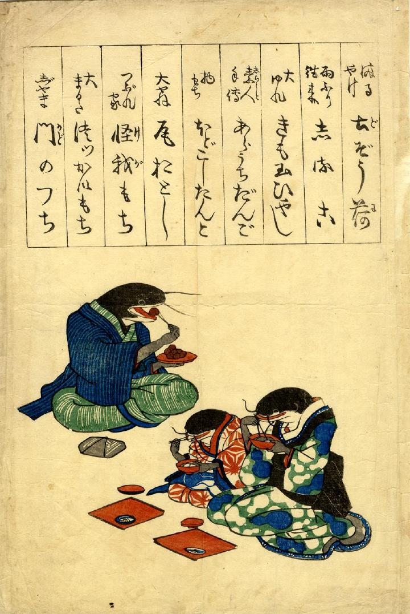

食事をとる鯰の一家。食べているのは「丸焼け土蔵煮」「怪我もち」など地震でこうむった被害を模したもの。
出典：親書誌：U426_nichibunken_0245：（まるやけ土ぞう荷；マルヤケドゾウニ）／日付：2011／資源識別子：U426_nichibunken_0245_0001_0000
Copyright (c)2010- International Research Center for Japanese Studies, Kyoto, Japan. All rights reserved.